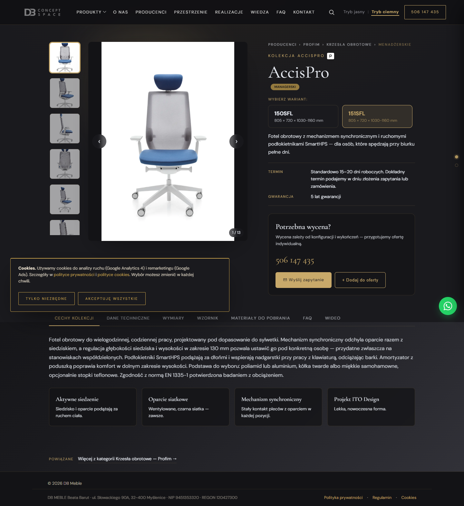
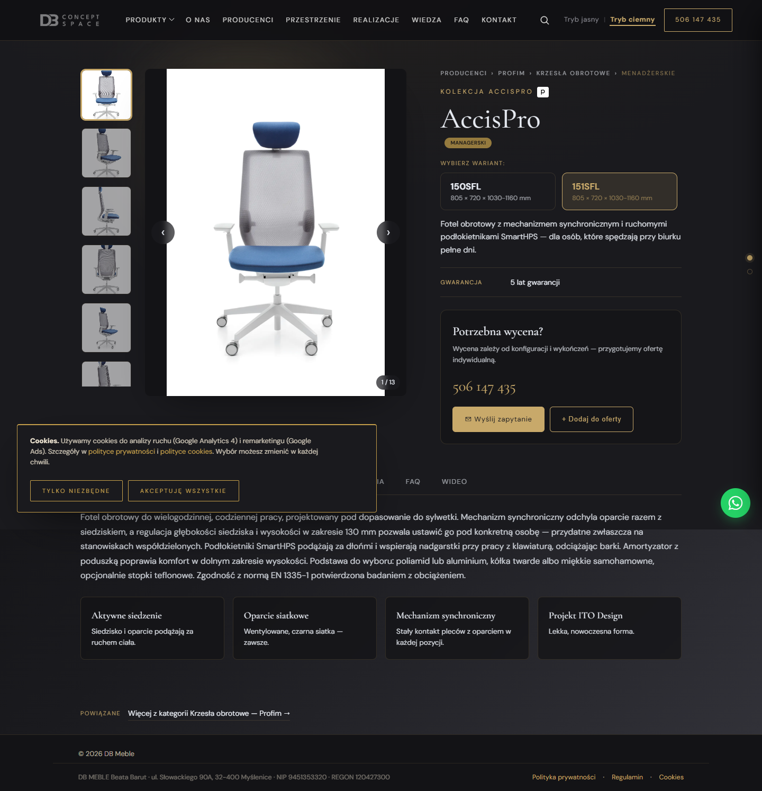
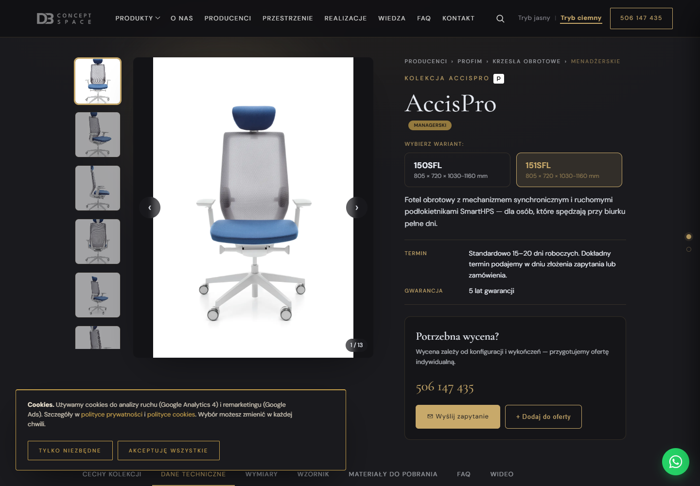
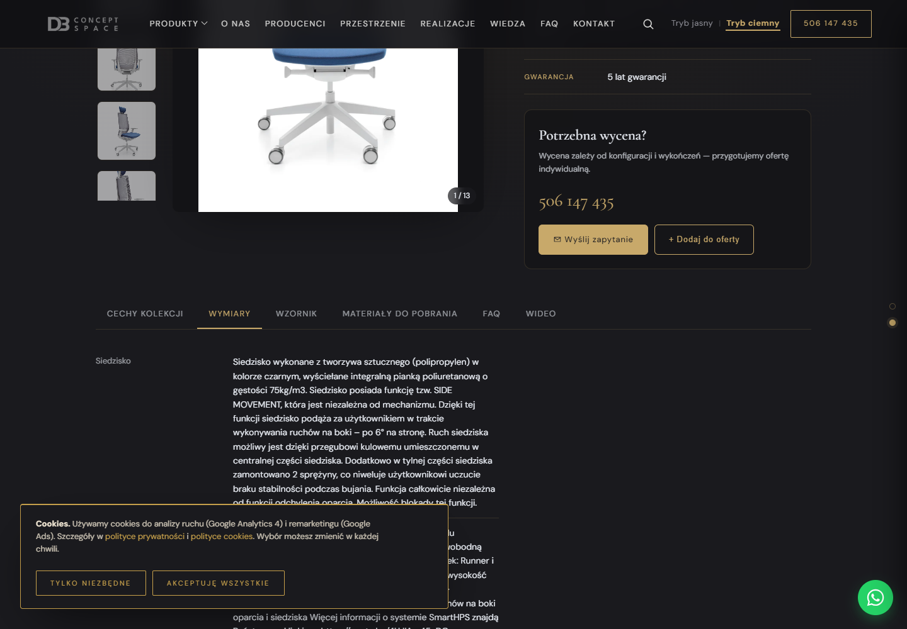
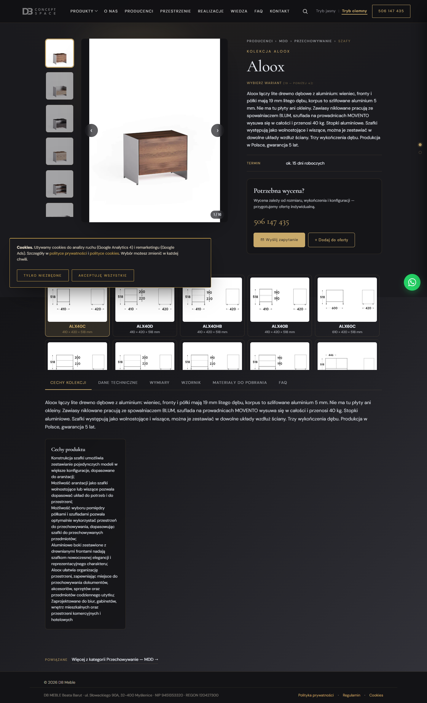
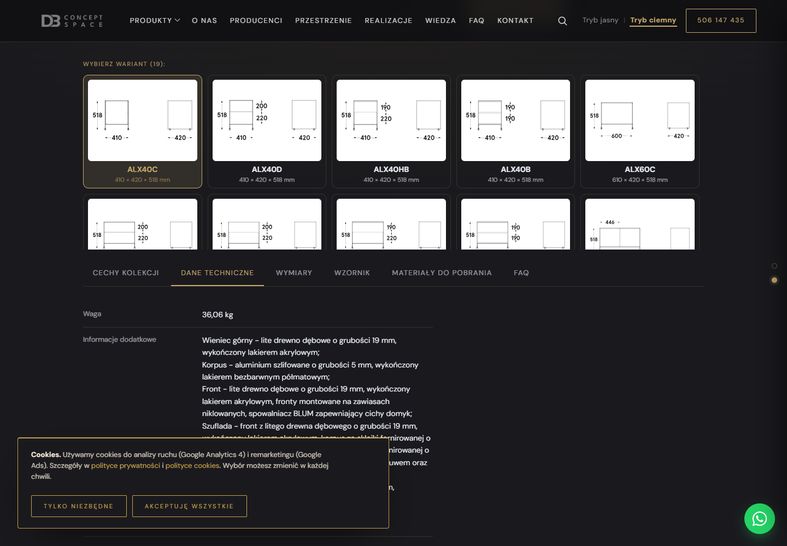

Gałąź t2/silnik-fix · fixy D4 (termin nigdy pusty) · D1 (pusta Wymiary ukryta) · zakładka „Dane techniczne" PRZED „Wymiary". Render: headless chromium 1440px, PRODUCT_DATA z karty, silnik+CSS inline. Lewa = v3 (silnik-fix), prawa = LIVE.




Karta mdd-aloox ma w repo status: "wykluczona" — nie jest wdrożona na dbmeble.pl (URL daje 301 → /producenci/mdd/). Brak wersji LIVE do porównania; po prawej pokazano v3 (ten sam szablon strony, PRODUCT_DATA z karty repo).

